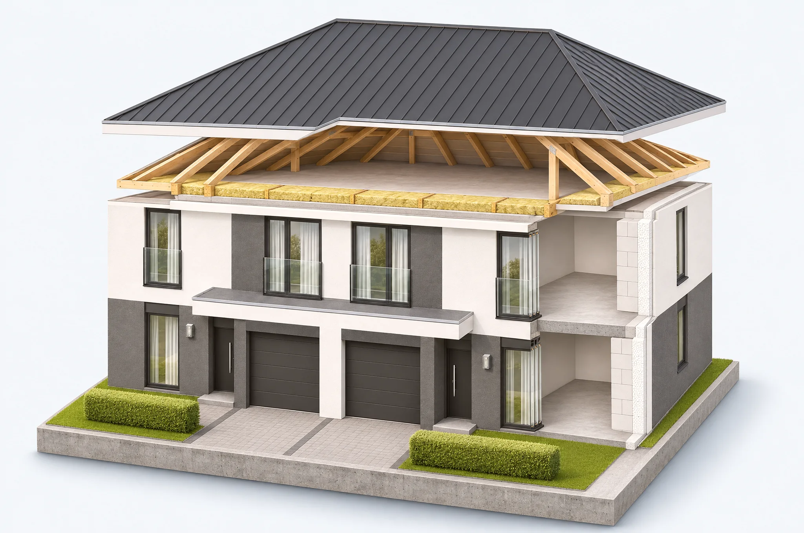
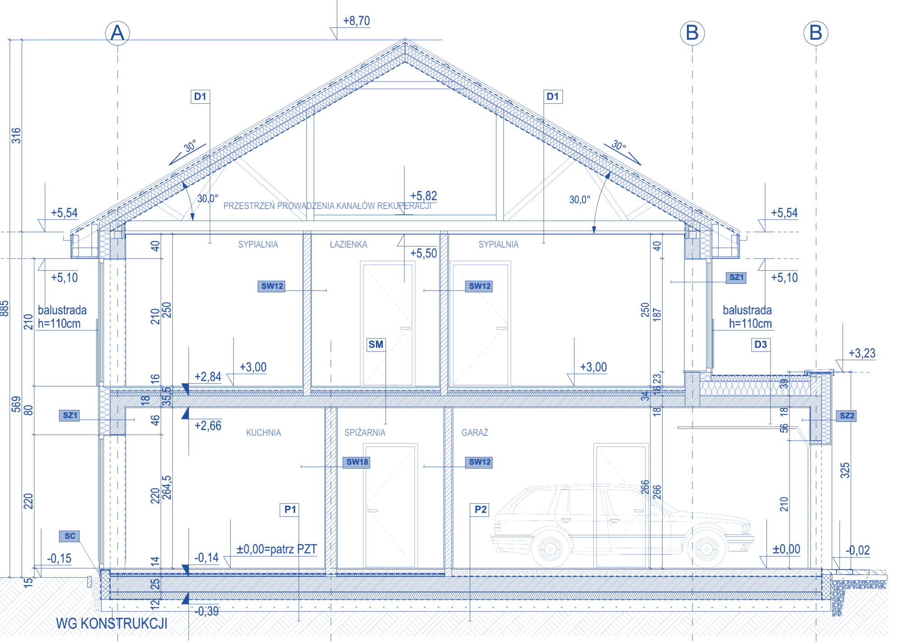
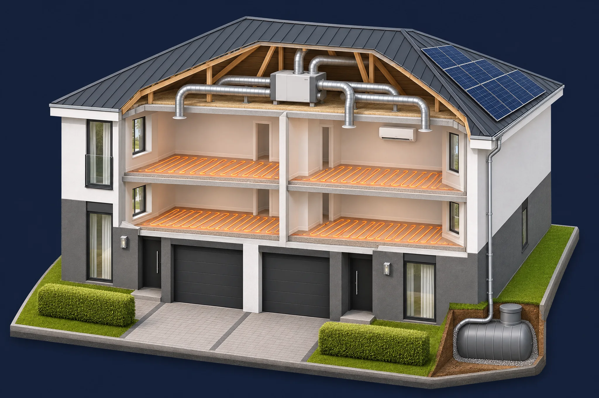
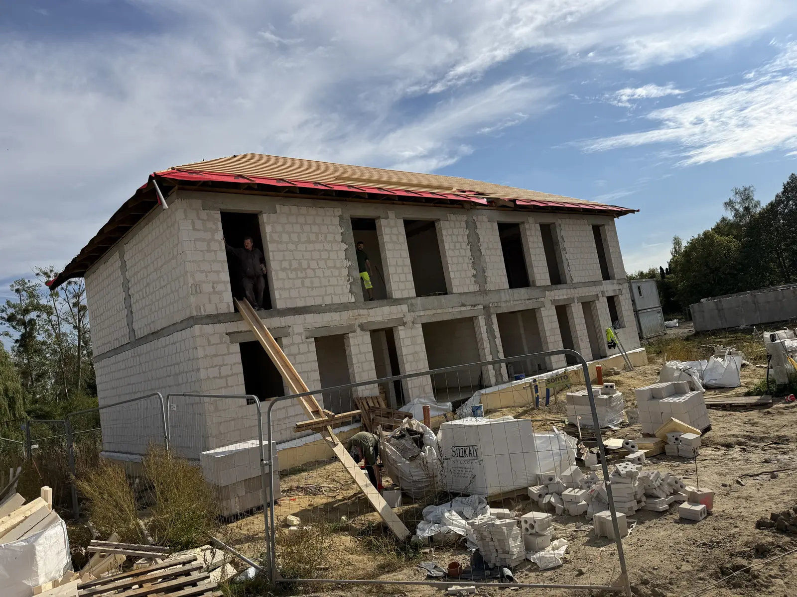

Jak zbudowany
jest dom.
Technologia tradycyjna, ogrzewanie podłogowe, rekuperacja, klimatyzacja i fotowoltaika. Dom spełnia parametry domu energooszczędnego.
- Ocieplenie, styropian
- 18–20 cm
- Okna
- 3 szyby
- Nachylenie dachu
- 30°
- U ścian zewnętrznych
- do 0,20
U: współczynnik przenikania ciepła w W/(m²·K), według projektu. Rysunek: przekrój B-B domu typu A z projektu architektonicznego.
Budynek
Silikaty, żelbet, dach czterospadowy.
Dom jest murowany, w technologii tradycyjnej. Parametry ścian, dachu i podłogi pochodzą z projektu architektonicznego z czerwca 2025.

- Konstrukcja
- Płyta fundamentowa, ściany z silikatów i lany strop żelbetowy.
- Dach
- Czterospadowy, o nachyleniu 30°, nad poddaszem nieużytkowym.
- Ocieplenie
- Styropian 18–20 cm.
- Współczynnik przenikania ciepła nie przekracza 0,20 W/(m²·K) dla ścian zewnętrznych, 0,15 W/(m²·K) dla dachu i 0,30 W/(m²·K) dla podłogi na gruncie.
- Okna
- PCV, trzyszybowe, opcjonalnie z roletami.

Dach 30° Kanały rekuperacji w poddaszu Okna trzyszybowe Styropian 18–20 cm Strop żelbetowy Płyta fundamentowaInstalacje
Ciepło z podłogi, świeże powietrze, własny prąd.
Dom jest ogrzewany elektrycznie i ma rekuperację, klimatyzację oraz fotowoltaikę. Woda i kanalizacja są z sieci.

- Ogrzewanie
- Elektryczne: kabel grzewczy zatopiony w posadzkach.
- Wentylacja i chłodzenie
- Rekuperacja i klimatyzacja.
- Fotowoltaika i woda deszczowa
- Na zewnątrz instalacja fotowoltaiczna i zbiornik na wodę deszczową.
- Na obie instalacje można uzyskać dotację z programów rządowych.
- Woda i kanalizacja
- Z sieci. W domu instalacja wodna, kanalizacyjna i ciepłej wody użytkowej.
Stan deweloperski
W jakim stanie odbierasz dom.
Trwa budowa 8 budynków pierwszego etapu, czyli 16 domów. Oddanie do użytkowania planowane jest na II kwartał 2027.
- Wykonane prace
- Tynki, posadzki, sucha zabudowa sufitu i instalacje.
- Układ domu
- Salon z aneksem kuchennym, dwie łazienki, 3 lub 4 pokoje na piętrze, garaż i pomieszczenie gospodarcze. Powierzchnia około 120 m², zależnie od typu.
- Porównaj cztery typy domów
- Działka i osiedle
- Ogrodzona działka około 500 m². Przed domami utwardzona, oświetlona droga dojazdowa, wjazd przez zamykany szlaban.

Informacje mają charakter poglądowy i mogą ulec zmianie.
Zapytaj o dom.
604 995 123Oglądanie budowy: poniedziałek–piątek, 8:00–17:00, po wcześniejszym telefonie.